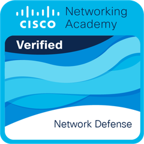
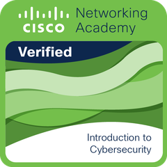
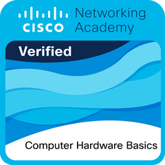
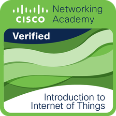
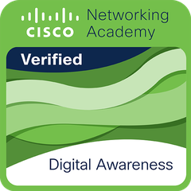
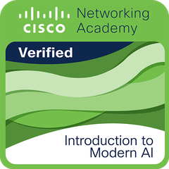

Network Defense
Cisco Networking Academy
Ver credencial →Infraestrutura de TI, redes de computadores e suporte técnico.
Tenho 18 anos, moro em Belo Horizonte e estou no início da carreira, com muita vontade de aprender.
Estudo Redes de Computadores na PUC Minas e sou técnico em Programação de Computadores pelo COTEMIG. Tenho experiência prática em suporte técnico, redes de pequeno porte, Cisco Packet Tracer, AWS, CFTV e infraestrutura. Desde 2021 faço limpeza, manutenção e montagem de computadores de forma autônoma. Busco uma oportunidade para aprofundar meus conhecimentos em infraestrutura de redes e suporte técnico.
O que eu uso e o que já pratiquei.
PORT STATE SERVICE 22/tcp open ssh 21/tcp open ftp 80/tcp open apache 443/tcp open aws
Prática em sala de aula, em laboratório e na bancada.
Auxilio os alunos nas aulas técnicas de programação, banco de dados, redes e arquitetura de computadores. Esclareço dúvidas e apoio a resolução de problemas e a correção de bugs em projetos e atividades práticas.
Trabalhei com switches e patch panels e montei cabos RJ-45 em atividades práticas de infraestrutura.
Limpeza, manutenção e montagem de computadores.
Redes de Computadores
2026 – 2028 · formatura prevista em dezembro de 2028
Ensino Médio completo com técnico em Programação de Computadores
2024 – 2025
Cursos da Cisco Networking Academy, com credencial verificável no Credly.

Cisco Networking Academy
Ver credencial →
Cisco Networking Academy
Ver credencial →
Cisco Networking Academy
Ver credencial →
Cisco Networking Academy
Ver credencial →
Cisco Networking Academy
Ver credencial →
Cisco Networking Academy
Ver credencial →Os primeiros projetos vão aparecer aqui. Enquanto isso, o código está no meu GitHub.
Documentação técnica com o passo a passo para instalar e publicar um servidor Apache2 no Linux Ubuntu.
Descreva aqui o que o projeto faz e qual problema ele resolve.
Descreva aqui o que o projeto faz e qual problema ele resolve.
Estou procurando estágio ou vaga júnior em suporte técnico e infraestrutura de redes.
Falar comigo